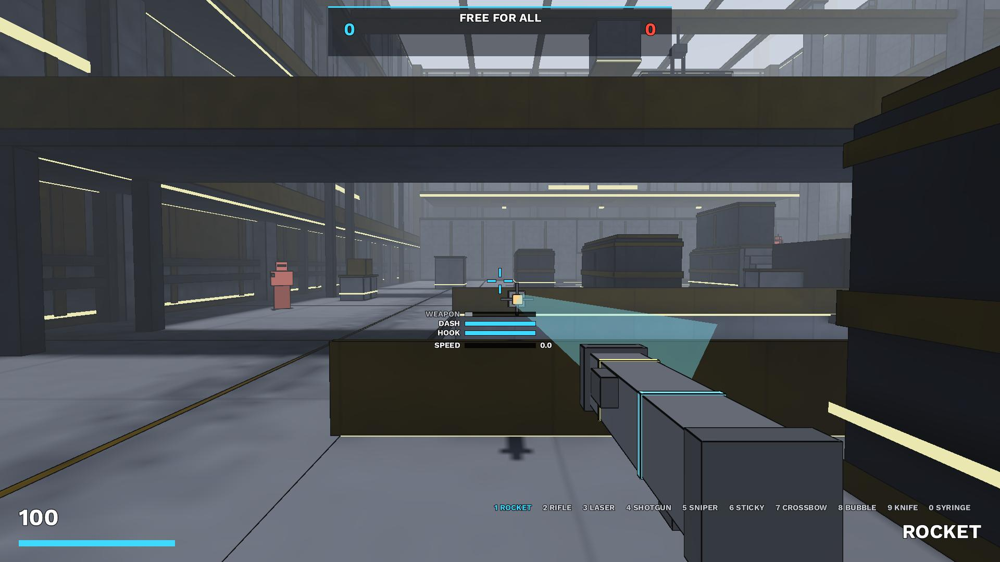
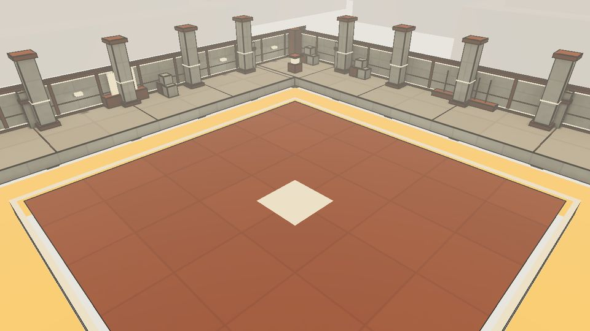
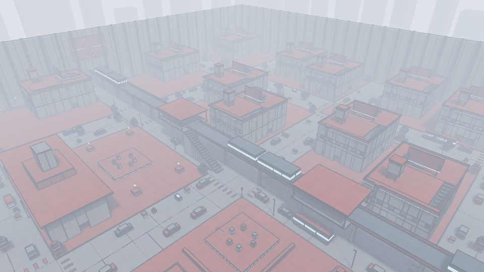
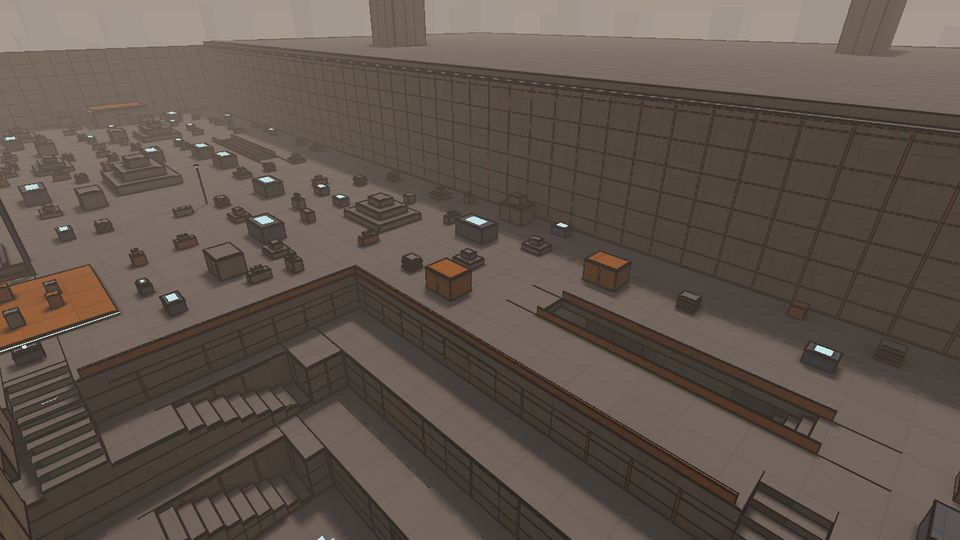
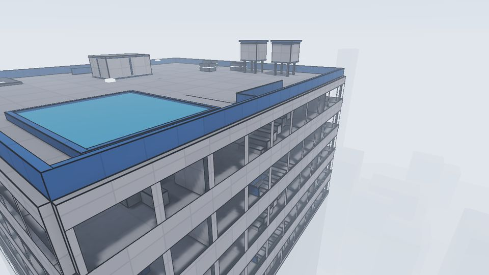

Movement is the skill
A grappling hook, a dash, rocket jumps, strafe jumps and bunny hops. The fastest player decides where the fight happens.

Free arena FPS for Windows, Linux and macOS
quark is an arena shooter in the Quake and Diabotical family. Grapple, dash, rocket jump and bunny hop through 21 maps, on servers that run at 1000 Hz.
Why quark
A custom C++ engine with one goal: no hitches between your hand and the screen. Everything else is there to make the fights better.
A grappling hook, a dash, rocket jumps, strafe jumps and bunny hops. The fastest player decides where the fight happens.
Servers start at 1000 ticks a second and only step down if the host can't keep up. The game is tuned for its worst frames, not its average.
Three ladders: 1v1 Vanilla, 1v1 Laser Vampire and FFA Instagib. Everyone plays with the same model, HUD, controls and 10 ms interpolation.
Four levels, from Beginner to Expert. They only see what you could see, react like humans, and the best ones bunny hop, dash and grapple.
The map editor is part of the game. Invite friends and edit the same map at the same time, then play it straight away.
A HUD editor with custom widgets, crosshairs, player models, sound packs and snap tap. Record demos and watch them back.


13 modes
Team objectives, duels and free-for-alls. Every map is built for one mode, and you can make custom modes with your own rules.
One life each per round. Last team standing wins. First to 5.
Attackers plant the bomb at a site, defenders defuse it or run out the clock.
Hold the hill with no enemy on it for a point a second. First to 100.
Push the cart along its track while the other team tries to stop it.
Both teams fight over one cart and push it toward the other end.
Attackers take the points in order. Each capture adds time and moves both spawns forward.
Rounds on one ruleset: Vanilla, Laser Vampire, Instagib and more. First to 5.
Every life brings a random modifier: low gravity, giants, rockets only.
A single-elimination bracket of 1v1s, seeded by rating.
Most kills when time runs out wins. A tie goes to sudden death.
Hit the checkpoints in order. Viaduct is also the ranked time trial.
One seeker with a knife. Everyone seeks once; ties go to rock paper scissors.
Whoever is the tagger when the timer runs out is out. Last one standing wins.
Ranked: 1v1 Vanilla, 1v1 Laser Vampire and FFA Instagib each have their own ladder, and the Viaduct time trial has its own board with splits. Ranked games always use the default model, HUD, controls and 10 ms interpolation.
21 maps
Each one is built for a single mode and every structure is there for a reason. Lodestone is the exception: a mine big enough for nine modes.











Weapons
Every weapon has an alt-fire. These numbers come straight from the game's code, fastest kill first.
| Weapon | Damage | Shot every | Hits to kill | Time to kill | Type |
|---|---|---|---|---|---|
| Loading weapon stats... | |||||
Time to kill is from 100 health with every hit landing on the body. Headshots, splash and modifiers change it.
Live
The top ten on each ladder, straight from the ranking server.
Loading the leaderboard...
What's new
Loading the latest update... See every update.
Download
The launcher installs the game and keeps it up to date. Prefer to manage it yourself? Grab the game on its own.
Windows may warn you. quark isn't signed with a paid code-signing certificate, so SmartScreen can say it's unrecognised. Click More info, then Run anyway.
Every file is signed. Each download has a .sig next to it, made with the release key, and so does this site's file list (SHA256SUMS). The launcher checks every update and itself. To check a file by hand: quark_sign verify <file> (how).
All releases, with notes and signatures: GitHub releases. Want new builds first? Try the testing channel.
Community
Find a match, report a bug or suggest a change on Discord. The code is all on GitHub, free and open source.
Made by one developer, with a lot of help from playtesters.
Run a server
Hosting from the game's menu is the easy way. For an always-on server on a Linux box (a small cloud VM is plenty):
sh tools/server/install.sh --public --name "my server"It starts on boot, restarts if it crashes and updates itself between matches. Details are in the README.